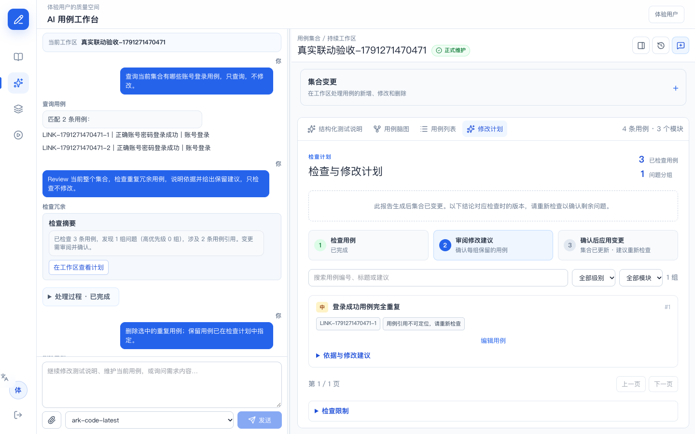
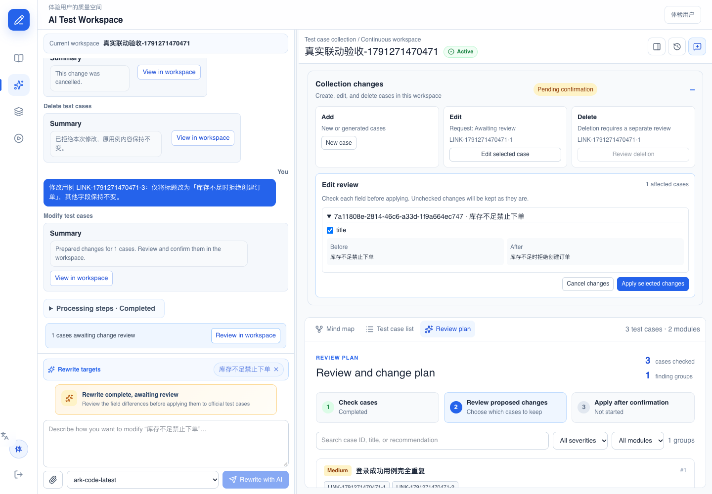
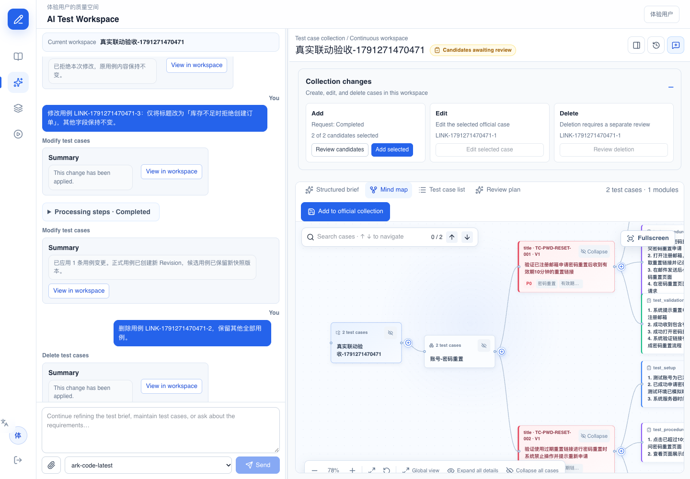
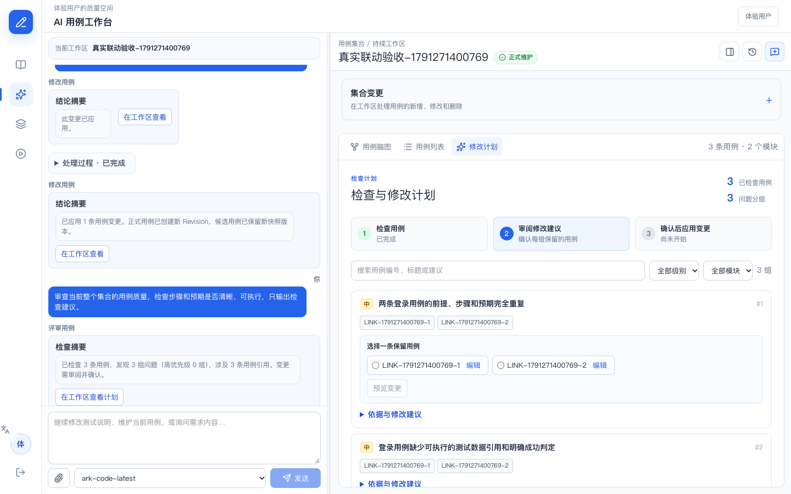

CasePilot Demo 报告CasePilot / 产品演示报告 / 2026-10-06
自然语言用例工作台
Demo 展示与验收报告
对话区展示请求、处理步骤和结论，脑图负责浏览与定位，Review 工作区承接检查证据和用例增删改。
演示结论
查询、重复冗余检查、质量 Review、修改、删除、新增、知识问答共 7 类意图通过真实系统验收。写入操作先生成可审阅内容，用户确认后更新正式集合。取消变更不落库，确认后的脑图、列表和刷新结果一致。
当前默认模型
| 位置 | 模型 / 配置 | 现场口径 |
|---|
| 界面默认选择 | ark-code-latest | 火山方舟 Coding Plan |
| 后端 auto 与备用 | doubao-seed-2.0-lite | 部分生成阶段超时后切换 |
| 按阶段的实际调用 | 保存在工作流记录中 | 不能仅凭界面选择判断每个阶段的执行模型 |
注意：界面默认选择与后端 auto 当前不是同一个值。原始会话保存的 model_id 为 auto。ark-code-latest 是服务端暴露的路由名，本报告不推断它具体对应的底层模型。
素材包
15 页 PPT，约 88 秒带中文章节字幕的静音实录，12 张原始截图，以及本报告。视频为当前真实系统中已完成验收结果的回放，没有重新执行写入操作。
CasePilot Demo 报告 · 1 / 8
七类用户意图
以下提示词可用于现场讲解，编号和目标需按实际演示集合替换。
| 意图 | 推荐表达 | 用户看到什么 | 写入边界 |
|---|
| 查询 | 查询当前集合有哪些账号登录用例，只查询。 | 匹配结果 | 不写入 |
| 去重 | 检查重复冗余用例，说明依据并给出保留建议。 | 摘要、分组、证据、保留项 | 确认删除后变化 |
| 质量 Review | 检查步骤和预期是否清晰、可执行。 | 问题及改进建议 | 检查不写入 |
| 修改 | 修改这条用例，仅调整标题，其他字段不变。 | 前后字段差异 | 确认应用 |
| 删除 | 删除用例〈编号〉，保留其他全部用例。 | 受影响清单 | 明确确认后软删除 |
| 新增 | 新增 2 条密码重置用例，链接有效期 10 分钟，过期禁止重置。 | 测试说明、候选用例 | 确认纳入 |
| 知识问答 | 什么是边界值测试？请简短解释，不要修改用例。 | 对话解释 | 不写入 |
意图之间的区别
去重主要判断重复覆盖，质量 Review 关注前提、步骤、预期和可执行性。两者都输出建议，后续修改或删除仍有独立确认。知识问答用于解释概念，不产生变更审阅单。查询与明确的标题修改可以走确定性处理，不代表所有步骤均调用模型。
CasePilot Demo 报告 · 2 / 8
对话与 Review、脑图的联动
演示时先看左侧摘要，再打开工作区计划，最后点击用例编号定位脑图。返回 Review 后，保留项、筛选和分页仍保留。

当前历史去重报告。集合已变化，因此界面提示报告对应检查时的版本。本次真实证据
初始集合共 3 条用例，其中两条登录成功用例实质重复。真实模型发现 1 组重复，查询账号登录范围返回 2 条结果。报告的用例引用能定位正式脑图节点。
讲解词
“对话告诉我检查了什么、发现了多少问题。具体依据和操作放在工作区。我可以先去脑图看上下文，再回来选择保留项，操作状态不会丢失。”
CasePilot Demo 报告 · 3 / 8
修改与删除的确认边界

真实验收过程中保存的修改待确认截图，部分界面文字为英文。修改
用例编号或脑图选择明确目标。工作区显示原字段和建议字段，用户选择需要应用的内容。确认前正式数据保持不变，确认后目标用例版本增加 1，其他用例不变。
删除
真实验收先生成删除审阅单并取消，集合仍为 3 条。随后重新提交，确认删除一个指定重复用例，集合变为 2 条。刷新后脑图不再展示被删除用例，其他用例仍存在。
讲解重点：把“提出建议”“审阅差异”“确认应用”分开说明。演示写入操作时使用独立集合，并核对清单。
CasePilot Demo 报告 · 4 / 8
新增候选与连续意图

真实候选审阅状态。此时正式集合仍为 2 条，候选尚未纳入。输入密码重置需求后，系统先整理测试说明。确认说明后生成恰好 2 条候选。用户确认纳入，正式集合由 2 条变为 4 条，原有用例未被覆盖，脑图和刷新一致。
生成后继续 Review
候选纳入后，后续检查读取正式用例最新版本，报告引用正式用例 ID，可以再次点击定位脑图。真实验收发现并修复了候选引用未转正式引用的问题。
耗时说明：本次候选生成约 4 分 22 秒，并发生备用模型切换。测试说明阶段另有等待。现场可预先启动生成，再展示其他意图；也可以播放录播。
CasePilot Demo 报告 · 5 / 8
质量 Review 与知识问答

真实质量 Review 的工作区结果，检查前后正式用例保持一致。质量 Review 的演示词
“检查不仅找重复，也会关注测试数据是否具体、成功判定是否明确、步骤是否可执行。建议保留在 Review 工作区，我可以据此发起下一轮修改。”
知识问答的演示词
“现在我只问一个测试方法问题。系统解释边界值测试，不创建候选、不生成删除清单，也不改变集合。”
真实验收已比较只读意图执行前后的正式用例内容，数据保持一致。完整问答画面见图片 10-qa.png 与视频 01:20 附近。
CasePilot Demo 报告 · 6 / 8
10 分钟现场演示脚本
| 时间 | 演示动作 | 讲解重点 |
|---|
| 0:00–1:00 | 介绍模型配置与三块区域 | 界面默认 ark，备用 doubao；实际阶段有记录 |
| 1:00–2:00 | 发起只读查询，显示匹配结果 | 自然语言限定范围 |
| 2:00–3:00 | 问一个边界值测试问题 | 问答不会触发写入 |
| 3:00–5:00 | 打开去重 / 质量 Review，定位脑图并返回 | 摘要简洁，证据与操作在工作区 |
| 5:00–7:00 | 展示字段差异和删除清单 | 先审阅，确认后才更新 |
| 7:00–8:30 | 播放字幕实录 | 覆盖新增、确认、后续 Review |
| 8:30–10:00 | 介绍验收数据和限制，答疑 | 3 条、删除后 2 条、纳入后 4 条 |
建议开场白
“今天演示的是测试用例集合的持续维护。用户可以直接表达查询、检查、修改、新增或删除意图。对话区展示过程和结论，工作区承接具体用例，最终修改由用户核对确认。”
等待时的讲解与切换
若模型长时间处理中，说明当前阶段仍在执行，切换到已完成的验收集合或播放本地视频。不要重复点击发送。不要把录播回放当作实时生成速度演示。
现场准备
提前打开应用、独立演示集合和本地视频。确认登录、接口服务和模型可用。视频为静音字幕版，讲解词可从本报告及 PPT 备注读取。PowerPoint 内嵌播放不可用时，直接打开同目录 MP4。
CasePilot Demo 报告 · 7 / 8
视频、证据与验收范围
视频：同目录 CasePilot_Demo.mp4，约 88 秒，1440 × 900，H.264，静音中文章节字幕。
| 时间 | 章节 |
|---|
| 00:07 | CasePilot 工作区联动 Demo |
| 00:15 | 01 查询用例 |
| 00:23 | 02 检查重复冗余 |
| 00:31 | 03 Review 定位脑图 |
| 00:39 | 04 修改用例 |
| 00:47 | 05 删除与取消 |
| 00:55 | 06 新增候选用例 |
| 01:03 | 07 生成后继续 Review |
| 01:13 | 08 质量 Review |
| 01:20 | 09 知识问答 |
数据与证据
主验收集合：新增、修改、删除、去重与后续 Review
辅助验收会话：质量 Review、脑图目标与知识问答
证据来自真实浏览器与 API 数据核对。后端范围及确认行为回归 33 项通过，前端受控流程回归 5 项通过。完整记录位于仓库 docs/acceptance-workspace-linkage-2026-10-06.md。
边界：本轮为独立小集合验收，未重新执行原始 1001 条集合的完整模型生成，也未复测服务重启中的任务恢复。历史候选快照报告可能仍保留旧编号，重新检查可获得正式引用。未提交的 Review 保留项仅验证了页面内切换保留。
CasePilot Demo 报告 · 8 / 8